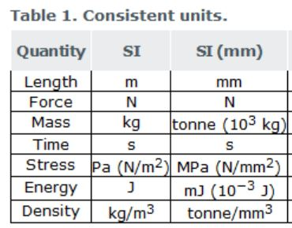

Ref : https://femci.gsfc.nasa.gov/units/index.html
https://info.simuleon.com/blog/units-in-abaqus
| Examples of Consistant Systems of Units for Structural Analysis | |||||||||||
| System of Units | Input | Output | |||||||||
| Length | Force | Elastic Modulus | Mass | Mass Density | WTMASS Param | Acceleration (1 G) | Disp | Force | Stress | ||
| 1 Metric meter-kg | m | N | Pa | kg | Kg/m3 | 1.0 | 9.807 | m/sec2 | m | N | Pa |
| 2 Metric mm-ton | mm | N | MPa | t or Mg | t/mm3 or Mg/mm3 | 1.0 | 9807 | mm/sec2 | mm | N | MPa |
| 1000 A | 0.001 A | 1e-12 A | 1000 A | ||||||||
NOTE:
t = Metric ton = 1000 kg = 1 Mega gram (Mg)
